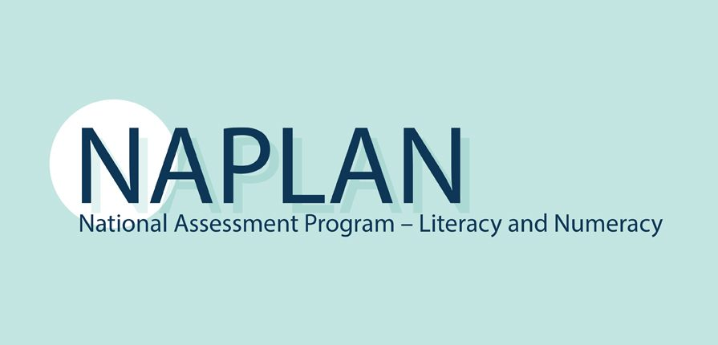

1 One in three
Every year, almost every Australian student in Years 3, 5, 7 and 9 sits NAPLAN, the National Assessment Program – Literacy and Numeracy. It tests five subjects (reading, writing, spelling, grammar and punctuation, and numeracy) and places each student at one of four proficiency levels.
The benchmark is Strong: meeting what is expected at that year level. In 2026, averaged across subjects and year levels, about one in three students (34%) fell short of it. In Year 5 it was 31%, roughly 3 children in every 10.
This page asks who those students are, where they live, and whether the gap closes as they move through school.
The four levels
- Exceeding
Well above what's expected at this year level. - Strong
Meeting the expected standard: challenging but reasonable. - Developing
Working towards the expected standard. - Needs additional support
Not yet at the expected standard. Likely to need extra help.

2 The flat line
On the old scale (2008–2022), scores crept up, mostly in the early years. Year 3 Reading rose 37 score points (on NAPLAN's own scale) and Year 5 Reading 25 score points, while Year 9 barely moved.
There was no test in 2020 because of COVID-19. In 2023 NAPLAN moved fully online with a new scale and new proficiency levels, so the line breaks there: scores on either side of the break can't be compared.
Since the reset, results have hardly moved. Of the 20 subject and year-level combinations, 14 changed by less than 2 percentage points (the difference between two percentages) between 2023 and 2026. The biggest fall was Year 7 Grammar & Punctuation (−3.9 percentage points) and the biggest rise was Year 5 Numeracy (+3.0).
Grammar & Punctuation is the weakest subject: in Year 3 and Year 9, about 44% of students sit below Strong.
3 Where you live
Where a child goes to school matters. NSW, Victoria and Queensland hold 77% of Australia's students. That's expected: they are the most populous states, home to the biggest cities of Sydney, Melbourne and Brisbane. The Northern Territory has only about 3,000 students in each year level. Student numbers hardly change between subjects or year levels.
Try it Click a state on the map to follow it in the line and ranking charts.
In 2026 (Year 5, average of subjects), Victoria and the ACT (both 73%) and NSW (71%) had the largest shares of students at Strong or Exceeding. The Northern Territory had 41%: 27 percentage points below the national figure of 68%, and about 30 behind the leaders.
Tasmania has no 2026 result. After a teacher boycott in public schools, only 60% of its students sat the test (94% in 2025), too few for ACARA to report fairly.
The top spot depends on the subject. The ACT or Victoria leads in most views, but NSW comes first in Spelling in Years 3 to 7, Victoria in Writing from Year 5 on, and WA in Year 9 Numeracy. Try the filters to see who leads.
The bottom spot never changes. The Northern Territory is last in every subject, every year level and every year since 2023. It only rises to seventh in 2026 because Tasmania has no result.
So the gap between first and last has not closed. Whatever the subject or year level, the top state is 27 to 36 percentage points ahead of the Northern Territory.
4 The postcode effect
To see why place matters, look at schools rather than states. Every school has an ICSEA score (Index of Community Socio-Educational Advantage). It is built mostly from the education and jobs of students' parents, plus the school's remoteness and its share of Indigenous students.
1000 is the Australian average: above it means more advantaged, below it less. The map below shows all 9,619 schools. Drag across a row of the histograms to show only those schools on the map, or zoom to a state.
Advantage thins out with distance. The typical major-city school has an ICSEA of 1049; in very remote areas it is 707.
28% of major-city schools are below the average of 1000, compared with 84% of remote schools and 97% of very remote ones.
The two ends barely overlap. Only 13 of 5,349 major-city schools score below 800, but nearly two-thirds of very remote schools do. Remote and very remote schools are just 6% of Australia's schools, yet they make up 31% of the least-advantaged tenth.
Results follow the same path. Nationally (Year 5, average of subjects), 72% of major-city students reach Strong or Exceeding, falling to 55% in outer regional areas, 44% in remote areas and 24% in very remote ones.
The drop is steepest in the Northern Territory: 57% in the outer regional area that includes Darwin, 31% in remote areas and just 8% in very remote ones. Grey zones have too few students for ACARA to publish a result.
5 Who's behind
Three gaps, side by side (Year 5 figures for 2026, except where noted):
Indigeneity — Indigenous students are behind everywhere, and the gap widens with distance: 24–30 percentage points in cities and regional areas, 46 in very remote areas, where only 8% of Indigenous students reach Strong or Exceeding. This overlaps with section 4: Indigenous students make up 4% of enrolments in major-city schools but 67% in very remote ones.
Parents' schooling — 81% of children whose parents hold a bachelor degree reach Strong or Exceeding, compared with 37% when parents left school in Year 11 or earlier.
Gender — the smallest gap, and it runs both ways. In every year level since 2023, girls lead in reading, writing, spelling and grammar, and boys lead only in numeracy. The girls' lead is biggest in writing, growing from about 10 to 16 percentage points by Year 9. One likely reason: in 2018, 53% of Australian 15-year-old boys didn't read for enjoyment, compared with 36% of girls (ACER).
6 How do we close the gap?
Does school close the gap? The chart follows students between tests, two years apart. Indigenous and non-Indigenous students gain almost the same number of score points at every step (85 vs 83 from Year 3 to Year 5, average of subjects), so the gap they start with stays put: about 78 score points in Year 3 and still about 78 in Year 9. In 2026 the average Indigenous Year 9 student scored about the same as the average non-Indigenous Year 5 student (494 vs 495).
What we learnt
- About one in three students is not yet at Strong, and that share has barely moved since 2023.
- Who comes out on top: students in the ACT, Victoria and the major cities, non-Indigenous students, and children of parents with a university degree. 81% of those children reach Strong or Exceeding (Year 5).
- The biggest gaps come from circumstance, not gender: remoteness, Indigeneity and parents' schooling each mean gaps of roughly 30 to 50 percentage points; gender means 3 to 10 (Year 5).
- The gaps are already there in Year 3 and don't close by Year 9. Students who start behind grow at the same pace as everyone else, not faster.
What could help
Start early.
The gaps exist by Year 3, so the national Better and Fairer Schools Agreement (2025–2034) adds a Year 1 phonics check and an early numeracy check to find students who need help sooner.
Help those behind grow faster.
The same agreement funds evidence-based teaching and targeted support such as small-group tutoring, and better teaching reaches every classroom, not just the students furthest behind.
Aim help where the gaps are.
It names regional and remote students, Aboriginal students and students from low socio-economic backgrounds as priorities: the same groups this page shows furthest behind.